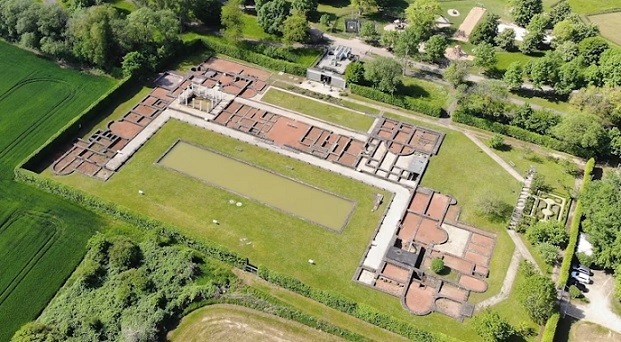
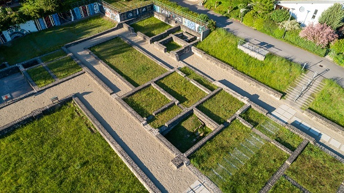

|
LUXEMBURGO ROMANA
La actual Luxemburgo estaba originalmente poblada por los Tréveros, una tribu Celta. En el 54 a.e.c. fue conquistada por Julio Cesar. Formaba parte de la Galia Bélgica. De época romana destaca: La villa romana de Echternach. Datada en el 60-70, fue reformada en cinco momentos diferentes. Estuvo habitada hasta principios del siglo V. La villa llegó a tener más las 70 habitaciones.
 Más info: https://www.mnaha.lu/en/roman-villa-echternach
Las termas romanas de Mamer. El vicus de Mambra se desarrolló, a orillas del río Mamer, en la calzada que unía Augusta Treverorum (Trier) y Durocortorum (Reims). Fue arrasado durante las invasiones germanas del 275-276. Tuvo una extensión de 12 ha. El mosaico de las nueve musas de Vichten. Fue descubierto en el año 1995. Realizado en torno al 240 en los talleres de Augusta Treverorum (Trier) y formaba parte de la sala de recepción, oecus, de una villa galo-romana, ocupando una superficie de 60m2. Está expuesto en el Museo Nacional de Historia y Arte de Luxemburgo (MNHA). La villa
romana y el acueducto subterráneo de
Walferdange. Poblado por tribus Celtas.
A los pies del Sonnebierg se
extiende a lo largo de más de 100m una villa romana que consta de unas
50 habitaciones. Las investigaciones arqueológicas han sacado a la luz
numerosas monedas y un monedero que datan del siglo III a.e.c. También
se han encontrado en el yacimiento varios tipos de cerámica que datan de
los siglos IV a I a.e.c.

|